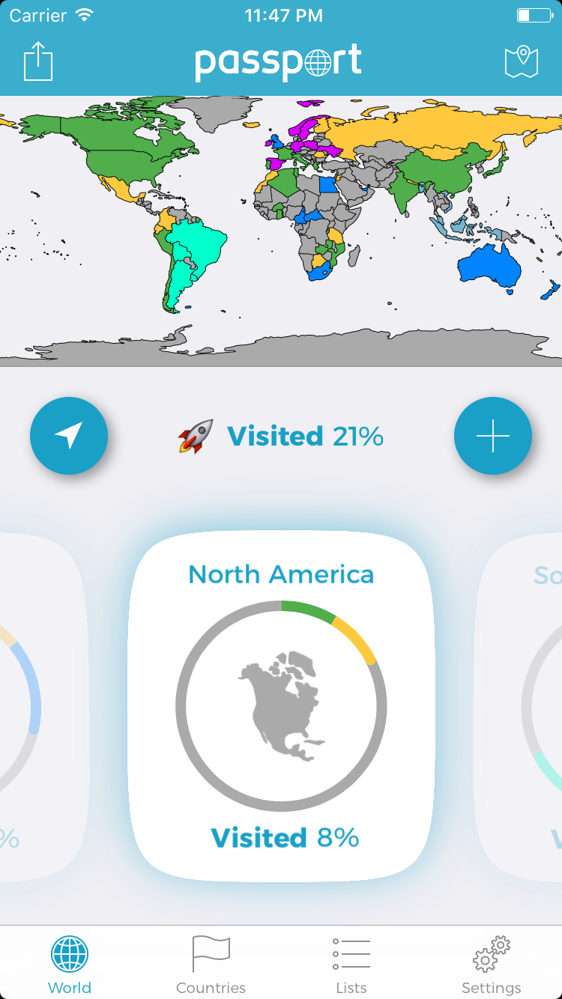
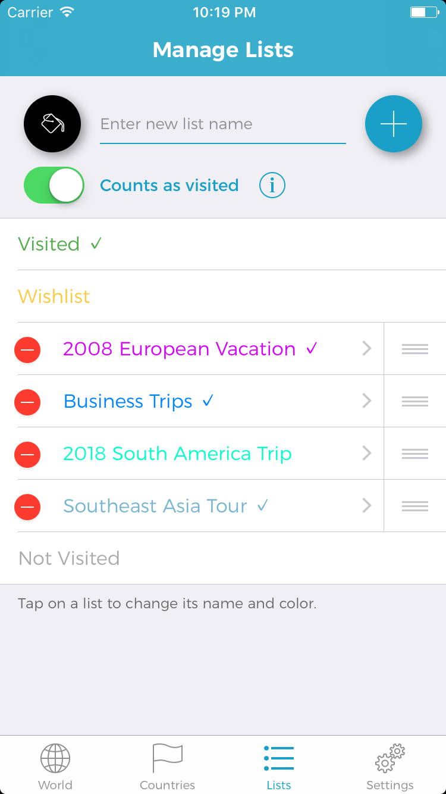
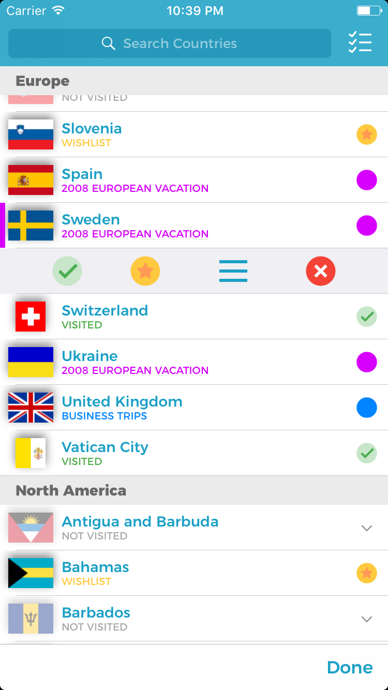
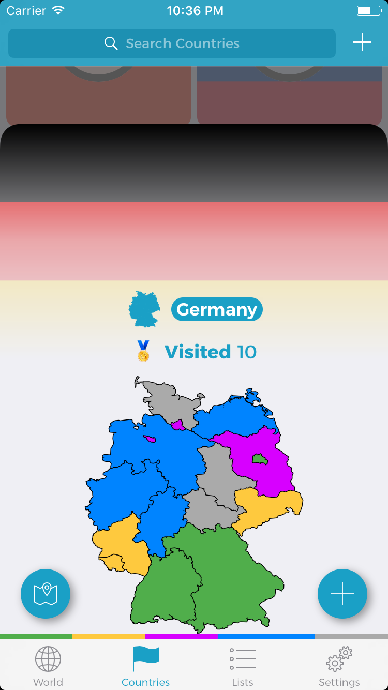
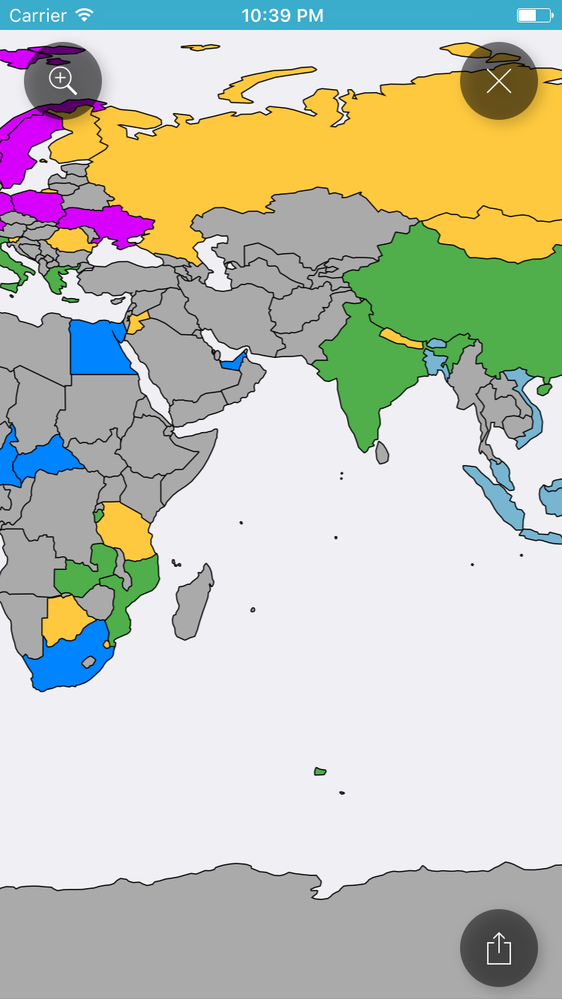
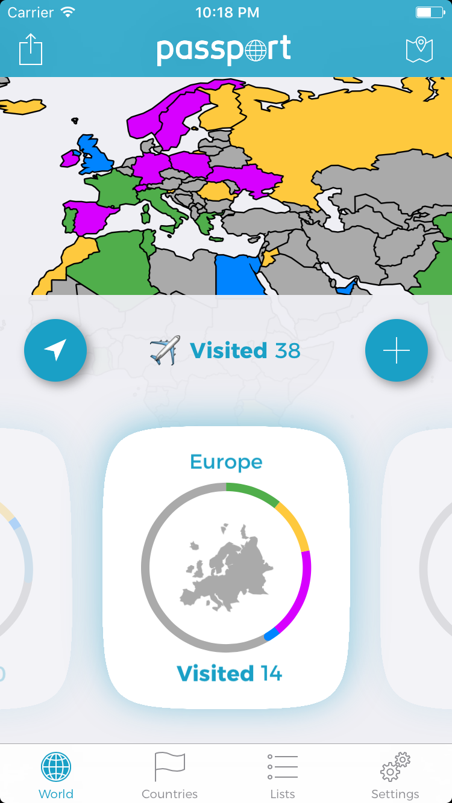
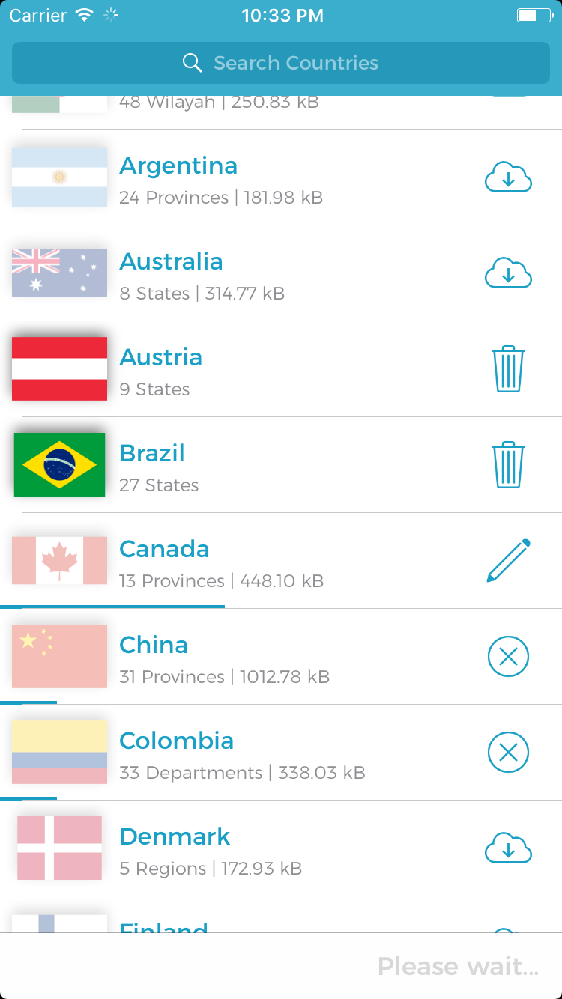
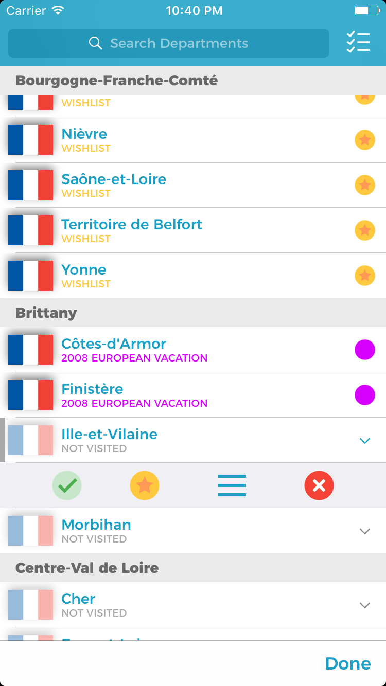
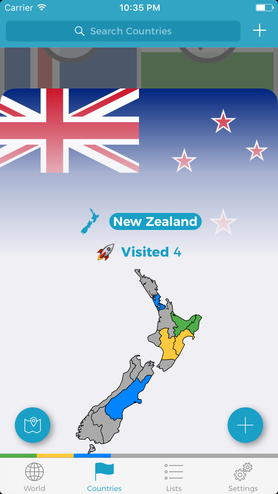
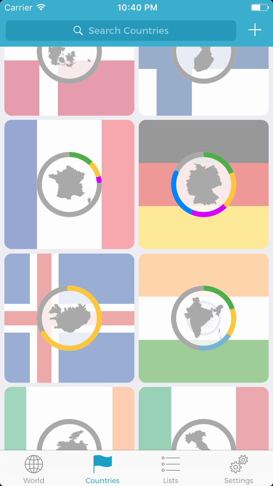

Passport
by Paolo Di LorenzoNote: Passport is an unreleased iOS app. It is currently not available on the App Store. It was a long-term project that I used to learn many of the frameworks used in iOS development. If you would like to see the app in more detail, feel free to contact me.
Passport allows you to keep track of the countries and regions you have visited!
Features
- 🗺 Colorful map depicting the countries that you have visited
- 🌏 World screen with at-a-glance travel progress
- 📄 Add and customize lists of countries
- 📌 Use lists to categorize countries and organize your travels
- 📍Quickly mark new countries using your location
- 📣 Share your map with friends and social media
- 🏴 Even keep track of the states, provinces, or regions in over 20 countries (and counting!)
Premium Features
- 🗒 Add unlimited lists (instead of only 2)
- 🗾 Add unlimited country region maps (instead of only 3)
- 🎨 Change the theme (lots of colorful ones to choose from!)
Images
|  |  |  |  |  |
|  |  |  |  |  |
{kind=link}
{kind=link}
{kind=link}
{kind=link}
{kind=link}
{kind=link}
{kind=link}
{kind=link}
{kind=link}
{kind=link}
This site is open source. Hosted on GitHub Pages — Theme by orderedlist